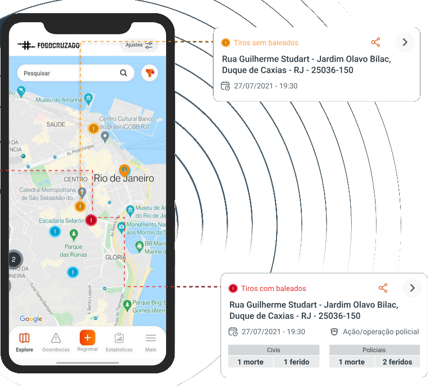
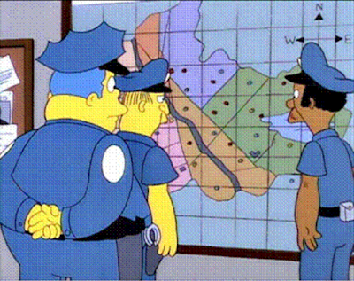
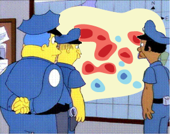
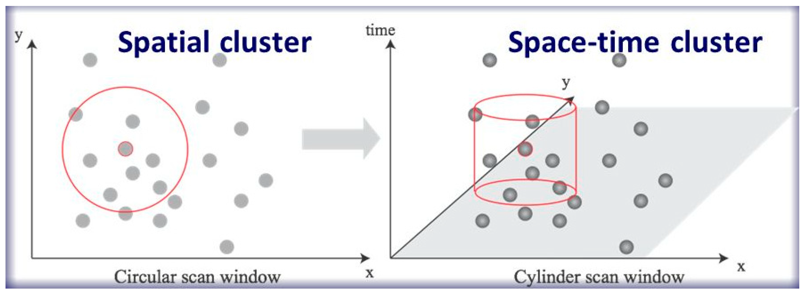
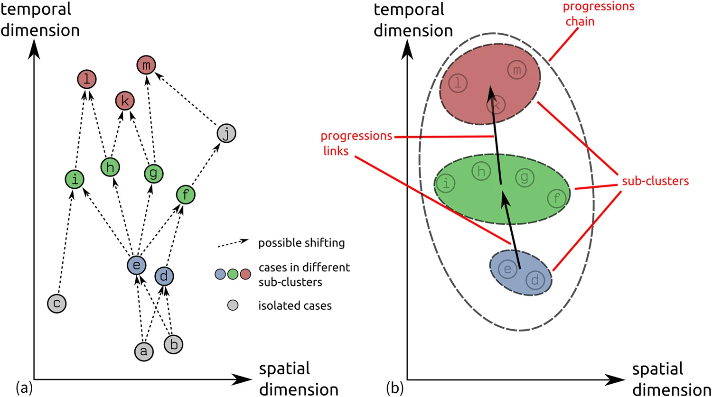

| value | ||
|---|---|---|
| name_muni | orientation | |
| Salvador | lag | 92 |
| coincident | 46 | |
| lead | 32 |
My name is Felipe Sodré Mendes Barros;
I am a geographer, professor at the National University of Argentina and a volunteer at the Fogo Cruzado Institute;
“Fogo Cruzado is a term used in Brazil to describe a conflict involving gunfire.
1\(^{st}\) open database on armed violence in Latin America;
It monitor and collects crowd-sourced data from shootings, verified in real time by a specialized local team;
Region of interest: Metropolitan regions of Rio de Janeiro, Recife, Salvador, and Belém in Brazil;

Over 60,340 shooting records;
About 18 new records added daily;
With spatial coordinates;

Time stamped;
With 40 other attribute information about each shooting;
It is hard to keep up when there is so much going on;
Thanks Kenneth Field (cartonerd.blogspot.com/) fot the Simpson’s cartoon
But:
We would be looking at shootings as if they all happened at the same time;
It would reinforce segregated and low-security areas that are already stereotyped;
It would not provide new insights into shooting/crime dynamics.

The Knox local spatio-temporal correlation approach is a powerful tool to use because it considers both spatial (\(\tau\)) and temporal (\(\Delta\)) attributes in the analysis.

And there is more:
This approach not only provides insight into identifying shots that are correlated in space and time;
It allows us to determine for each observed shooting event whether it is a lead occurrence (spatiotemporally influence other dependent events), a lag occurrence (those that are spatiotemporally dependent on preceding lead points), or a coincident point (those that occurs simultaneously with others without a clear lead or lag relationship);
It also provides new insights by identifying a progression between correlated clustered shots.

In this analysis we will consider:
shots that occurred between 2022-07-01 and 2024-06-30 for all 13 cities of Salvador’s MR;
3,473 shots in total;
\(\tau\) we used 5 days as the cut-off time between recordings;
and 300 metre \(\Delta\) limit;
In Salvador:
| value | ||
|---|---|---|
| name_muni | orientation | |
| Salvador | lag | 92 |
| coincident | 46 | |
| lead | 32 |